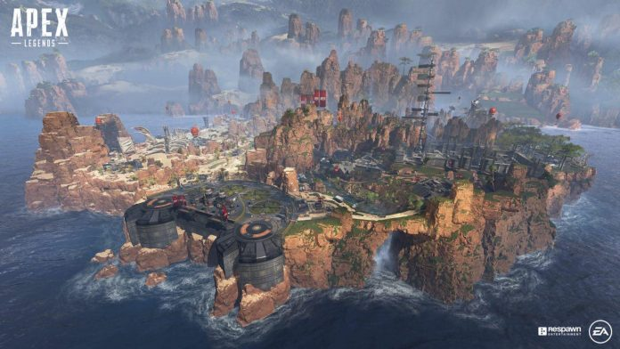
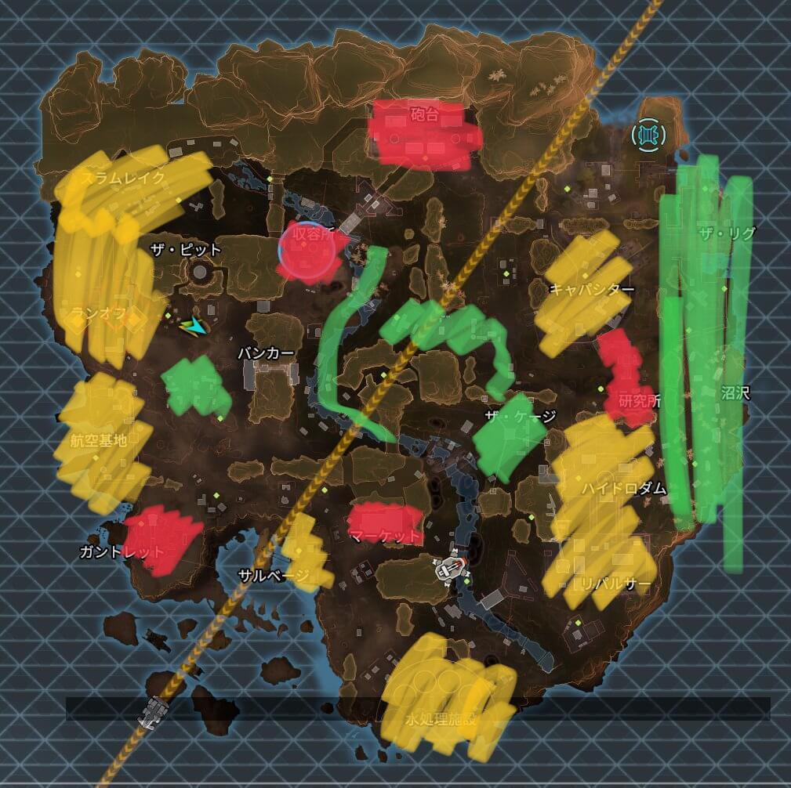
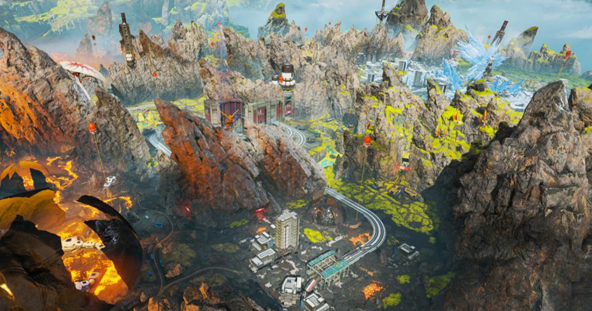
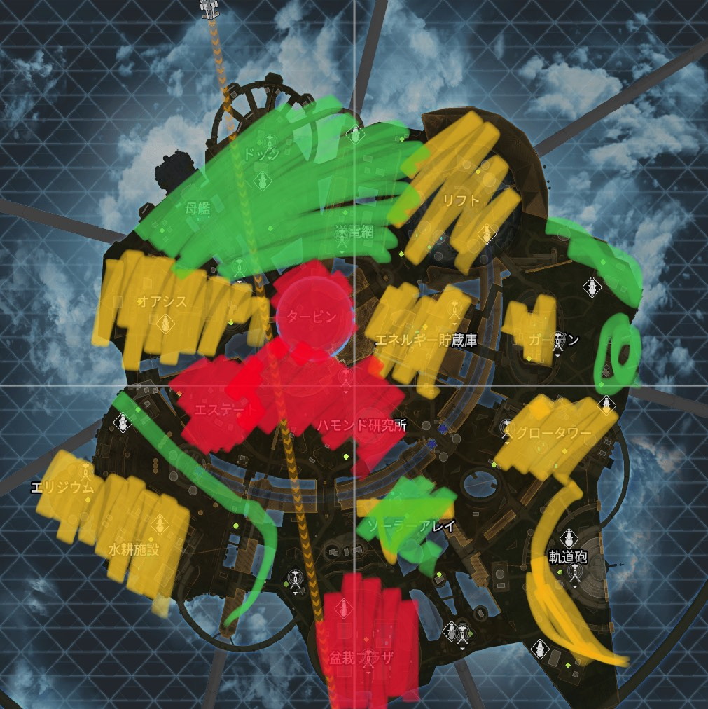
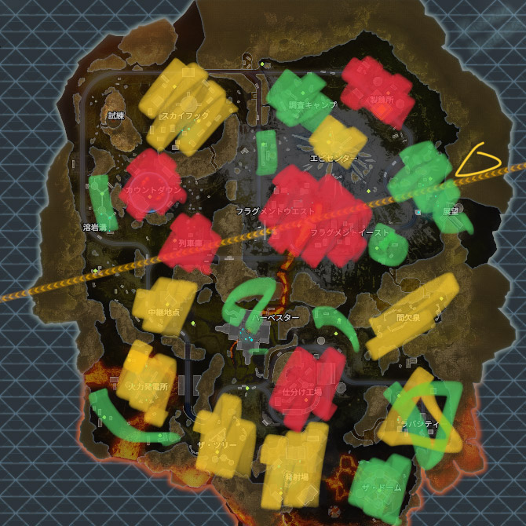

1 降下について
1.1 降下は優勝できるかにかかわる
降下は優勝できるかにかかわる。これは紛れもない事実だ。また、初動死という言葉があるように、降りてすぐ死ぬ場合もある。これは降下に原因がある場合が多い。武器ガチャに負けたということもあるが、そういう事故も降下をしっかり行えば回避できるようになる。
1.2 周りを見よう
降下途中で意識したいのが、自分の周りのプレイヤーを見るということだ。降りる場所によっては大量のパーティーが降りることがある。その時、中心に行くか、外周の人が少ないところに行くか、そのように戦略を考えながら降下すると、戦闘の勝率は跳ね上がる。
1.3 ジャンプマスター
ジャンプマスターは、チームの命運を握っている。といっても、責任よりは権利といった感じだ。自分が好きな、行きたいところにいけるという点で、ジャンプマスターは権能といえる。しかし、ジャンプマスターがミスをして、みんなが死にまくるようなことはメンバーとしてもジャンプマスターとしても避けたいものである。
また、ジャンプマスターは移譲することができる。自信がないときは、移譲するのもアリだが、その人がかなりガチで超強いエリアに行く可能性もあることを覚えておこう。
2 キングスキャニオン
2.1 キングスキャニオンとは
キングスキャニオンは、昔からあるマップだ。過去のアップデートで、人が集まりすぎるスカルタウンというステージがなくなってから、バランスよく人が下りるようになり、偏らず楽しいプレイができる。しかし、航空基地や、キャパシターは依然として多くのプレイヤーが集まるポイントであるため、一応注意したい。
2.2 敵の大まかな分布と考察
見方は、赤・黄・緑の順で安全ということである。 これを参考に、プレイし始めの時は緑を優先的に降りると、楽しみながらゲームに慣れることができると思う。時にザ・リグ辺りはあまり人がいないので、武器をそろえた状態で敵に挑むことができる。 また、マーケット・研究所・ガントレット・収容所・砲台はかなり人気のスポットで、降りるのはかなり危険であると言える。実力がついてきたな、と思った時や、とりあえず速攻で打ち合いしたいときなどに降りてみよう。
3 ワールズエッジ
3.1 ワールズエッジとは
多くのギミックが実装されているマップである。しかし漁夫が多すぎることで有名で、敵が多いポイントに降りて生き残れる可能性は非常に少ない。また、今開催中の期間限定ゲームモードであるウィンターエクスプレスで列車が走っている。これも特徴的なギミックの一つだ。
3.2 敵の大まかな分布と考察
まず、フラグメントと呼ばれる中心の町は、毎回大量のパーティーが降下する。かなりの激戦区と呼ぶことができ、生き残るのは本当に強くないと難しい。そのため、プレイし始めはできるだけ避けて降下しよう。近くの小さな町的なところがあるので、そっちで準備を整えてから行く感じでいいと思う。 また、列車庫はかなり立体的なマップである。しかも開けた平野でカウントダウンという激戦区とつながっていて、しかも武器庫がある洞窟の出口もある。最強クラスの激戦区だが、立体的である以上立ち回りでうまく行けば上級者も倒せる可能性がある。プレイし始めでも降りる価値のあるマップである。
4 オリンパス
4.1 オリンパスとは

オリンパスとは、最近追加されたかなり広いマップだ。広いマップで移動を楽にするために、各地にホバーバイクのようなものがおいてあり、乗ることができる。人口島らしさが目新しいマップである。
4.2 敵の大まかな分布と考察
まず、わかっていることが少ない当マップだが、確実に言えることがある。それは真ん中のタービンを通るのはできるだけ避けたほうがいいということだ。タービン、エステート、ハモンド研究所はかなり激戦区として知られており、初動で降りると間違いなく4パーティーくらいと戦うこととなる。 また、盆栽プラザも外周部の激戦区として降りる人が多い。上層部、下層部に分かれているこのステージは、特に戦略性を求められる。